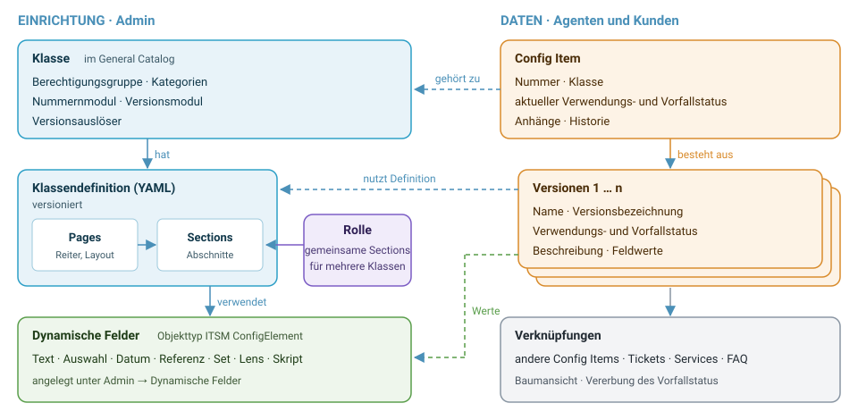

Wie die CMDB aufgebaut ist¶
Die CMDB von OTOBO verwaltet Config Items — alles, was für den Betrieb von IT-Services eine Rolle spielt: Server, Arbeitsplätze, Netzwerke, Software, Lizenzen, Verträge, Standorte. Dieses Kapitel erklärt die Begriffe, die im Rest des Handbuchs vorausgesetzt werden, und wie sie zusammenhängen.
{kind=link}

Abb. 1 Die Bausteine der CMDB und ihre Beziehungen¶
Config Item und Version¶
Ein Config Item (CI) ist ein einzelnes verwaltetes Objekt, zum Beispiel der Server srv-web-01. Es hat eine unveränderliche Nummer, gehört zu genau einer Klasse und besitzt eine oder mehrere Versionen.
Alles, was sich im Lauf der Zeit ändern kann, hängt an der Version: Name, Verwendungsstatus, Vorfallstatus, Beschreibung und die Werte aller Felder. Ob eine Änderung eine neue Version erzeugt oder die aktuelle überschreibt, legt die Klasse über ihre Versionsauslöser fest (siehe Wann entsteht eine neue Version eines Config Items?). So lässt sich später nachvollziehen, in welchem Zustand ein Gerät zu einem bestimmten Zeitpunkt war.
Neben den Versionen führt jedes Config Item eine Historie mit allen Änderungen und seine Anhänge. Anhänge gehören zum Config Item, nicht zu einer Version.
Klasse, Definition und Rolle¶
Die Klasse bestimmt, welche Art von Config Item vorliegt — Server, Notebook, Lizenz. Sie ist ein Eintrag im General Catalog und trägt Eigenschaften wie Berechtigungsgruppe, Kategorien und Nummernschema.
Welche Felder ein Config Item der Klasse hat und wie sie angezeigt werden, beschreibt die Klassendefinition: ein YAML-Dokument aus Reitern (Pages) und Abschnitten (Sections). Jede Änderung an der Definition wird als neue Version der Definition gespeichert.
Abschnitte, die mehrere Klassen gemeinsam brauchen — Kontakt, Standort, Buchhaltung —, lassen sich als Rolle auslagern und in beliebig viele Klassen einbinden.
→ Klassen einrichten, Rollen einrichten, Klassendefinition (YAML)
Felder¶
Die Attribute eines Config Items sind dynamische Felder mit dem Objekttyp ITSM ConfigElement — dieselbe Technik, die OTOBO auch für Tickets verwendet. Es stehen die üblichen Feldtypen bereit (Text, Auswahl, Datum …) und zusätzlich CMDB-typische:
Referenzfelder zeigen auf andere Objekte — ein anderes Config Item, einen Agenten, einen Kundenbenutzer, eine Kundenfirma, einen Service oder ein Ticket.
Set-Felder fassen mehrere Felder zu einer wiederholbaren Gruppe zusammen, etwa Netzwerkkarte mit IP-Adresse, MAC-Adresse und Hostname.
Lens-Felder zeigen ein Feld des referenzierten Config Items an, zum Beispiel beim Arbeitsplatz die Laufzeit des zugehörigen Wartungsvertrags.
Skript-Felder berechnen ihren Wert aus anderen Feldern.
→ Dynamische Felder für Config Items, Feldtypen und ihre Optionen
Status¶
Jede Version hat zwei Status, die beide im General Catalog gepflegt werden:
- Verwendungsstatus (Deployment State)
Wo im Lebenszyklus steht das Config Item — Geplant, Test/QS, Produktiv, In Wartung, Außer Dienst … Jeder Status gehört zu einer der Funktionalitäten preproductive, productive oder postproductive. Davon hängt ab, ob das Config Item in der Übersicht erscheint und ob es auf Services wirkt.
- Vorfallstatus (Incident State)
Funktioniert das Config Item — Operativ, Warnung, Vorfall. Neben dem eigenen Vorfallstatus hat jedes Config Item einen aktuellen Vorfallstatus, der Störungen verknüpfter Config Items berücksichtigt.
Verknüpfungen¶
Config Items stehen selten allein. Die CMDB kennt zwei Arten von Beziehungen:
- Referenzfelder mit Linktyp
Ein Referenzfeld wie Standort oder Betriebssystem erzeugt eine Beziehung, sobald ihm ein Linktyp zugeordnet ist (liegt in, hängt ab von …). Die Beziehung ändert sich automatisch mit dem Feldwert.
- Manuelle Verknüpfungen
Über Verknüpfen in der Detailansicht lassen sich Config Items mit anderen Config Items, Tickets, Services und FAQ-Artikeln verbinden.
Beide Arten speisen die Baumansicht und die Vererbung des Vorfallstatus: Fällt ein Server aus, erhalten die von ihm abhängigen Config Items den Status Warnung, und Services, die auf produktiven Config Items aufsetzen, zeigen die Störung an.
Berechtigungen¶
Der Zugriff ist zweistufig: Die Gruppe itsm-configitem öffnet die CMDB-Masken,
die Berechtigungsgruppe der Klasse entscheidet, welche Config Items ein Agent
sehen (ro) oder ändern (rw) darf. Kunden sehen Config Items nur über
ausdrücklich freigeschaltete Berechtigungsbedingungen.
Pakete und Oberflächen im Überblick¶
Bereich |
Wo |
|---|---|
Klassen und Rollen definieren |
Admin → Config Items |
Klassen, Rollen, Status, Kategorien anlegen |
Admin → General Catalog |
Felder anlegen |
Admin → Dynamische Felder (Objekttyp ITSM ConfigElement) |
ACLs für Config Items |
Admin → Access Control Lists (Objekttyp ITSM ConfigElement) |
Import/Export-Vorlagen |
Admin → Import/Export |
Webservices |
Admin → Webservices |
Arbeiten mit Config Items |
Hauptmenü CMDB |
Kundenportal |
Menü CMDB (nach Freischaltung) |